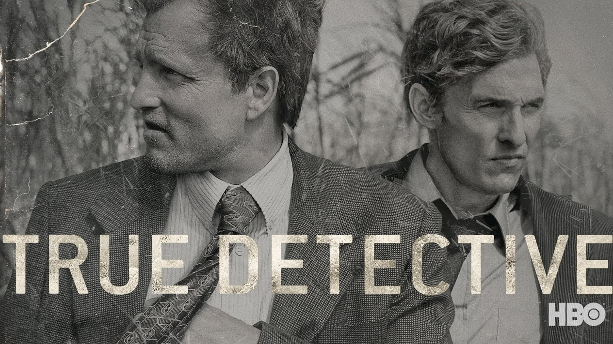

ODESZA makes yet another amazing remix. The original song, Divinity
by Porter Robinson, is a very good one, but something about this remix
is special. ODESZA adds an upbeat touch to the song, and if you enjoy
EDM music, no doubt you will enjoy this.
Listen to the song right now!
Chet Faker - Talk is Cheap
Chet Faker shows his relaxing and chill type of music in this gem.
With finals coming up, this song would be great to chill out to while studying or doing homework!
Listen to this song right now!
TV shows of the Day
Bloodline
Bloodline is one of the many Netflix original gems that should be
your next binge watch. The plot revolves around the Rayburn family,
who are reminded of a tragic past when family member Danny returns home. A deep and complex plot unfolds
that will keep you guessing and wanting more.
Check out the trailer below!
HBO's True Detective (Season 1)

The first season of True Detective goes down as my favorite season of a TV show of
all time (season 2 lacked the intense plot that season 1 had). This dark crime drama has an intense plot and amazing character development that will lead you to being hooked instantly. Check out this show on HBOGO!
Check out the trailer below!
Movies of the Day
Creed
Just recently coming out to theaters, Creed brings back the legendary Rocky Balboa saga and it does not disappoint. The protagonist, played by Michael B. Jordan, does an incredible job as Apollo Creed's son as an up and coming boxer. This is a must see!
Check out the trailer below!
Lawless
This story about brothers who bootleg moonshine is a great action packed film.
During the days of prohibition, these brothers have to find ways to keep their bootlegging business successful by avoiding authorities and others. You can find Lawless on Netflix and other streaming services!
Check out the trailer below!
Got Feedback? If so, click this to get in
in touch with me!
Email me at buntonn1@msu.edu with reviews or any other feedback!